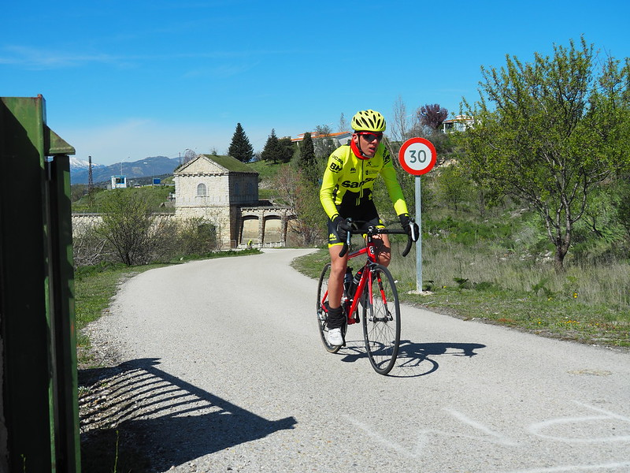

Informatica
Uno de mis mas grandes aficiones es la informatica pero dentro de lo extensa que es la informtica hay un campo que me atrae especialmente,
este campo es la progrmacion. Para mi es sin duda alguna mi parte favorita, poder crear lo que quieras, eso quiere decir que el unico limite es la imaginacion
que cada uno tenga. Tambien me gusta la idea de tener al ordenador como alguien que te tiene hacer caso y ejecutar todo lo que tu le digas.
Desde que aprendi lo que es un lenguaje de programacion y como funcionan la mayoria, todo lo que veo hecho lo intento traducir a como lo haria yo en
un lenguaje que conozca. Cada vez que, por ejemplo YouTube, introduce una nueva caracteristica o funcion intento pensar como lo replicaria yo si
trabajase para ellos con un lenguaje que yo si conozca.

Ciclismo
Siempre se ha dicho que para llevar una buena vida hay que hacer deporte. En mi caso otra de mis intereses es la practica del ciclismo. Ya no la realizo tanto
como antes por un tema de tiempo. Pero durante bastantes años corri en un equipo de forma amateur. Me gustaba mucho ya que sentia como si fueras un profesional,
tenia un entrenador, entrenabamos, competiamos y a veces habia premios. Como he dicho se sentia como si me dedicara a eso pero sin la presion que un profesional
tendria sobre sus hombros, además me ayudaba a distraerme y mantener el cuerpo en forma. Durante esos años conoci a mucha gente de la me hice amiga y algunos con los
que todavia mantengo el contacto y por ultimo me ayudo a ver los valores del deporte muy de cerca.
